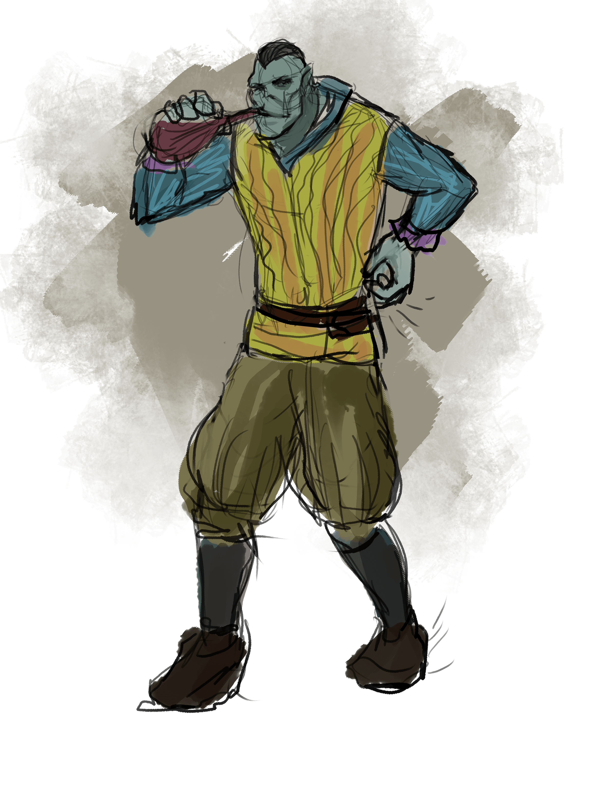

Scarback
middle-aged half-ogre
lawful neutral
Level 5 barbarian
Pronouns:
it/him
Occupations:
Performer
Armor Class
11
Hit Points
53 (TODO Hitdice)
Speed
30.
STR
19 ()
DEX
9
CON
18
INT
7
WIS
8
CHA
8
Saving Throws
TODO Saving Throws
Skills
Smithing; Strength; Survival; Athletics
Proficiencies
TODO
Damage Immunities
TODO Damage Immunities
Condition Immunities
TODO Condition Immunities
Senses
TODO Senses
Languages
Orcish Goblin Ogre Common ,
Adjectives
Looming ,
Special Abilities
- Unarmored Defense | Stone's Endurance. Scarback can focus himself to occasionally shrug off injury. When he takes damage, he can use his reaction to roll a d12. Add hisConstitution modifier to the number rolled, and reduce the damage by that total. After he uses this trait, he can’t use it again until you finish a short or long rest. | Rage
Special Equipment
Combat Tactics
Scarback is fearless. He will almost always begin any combat by entering a rage and attacking the most powerful appearing foe.
Actions
Great Axe | Javelin
Factions
